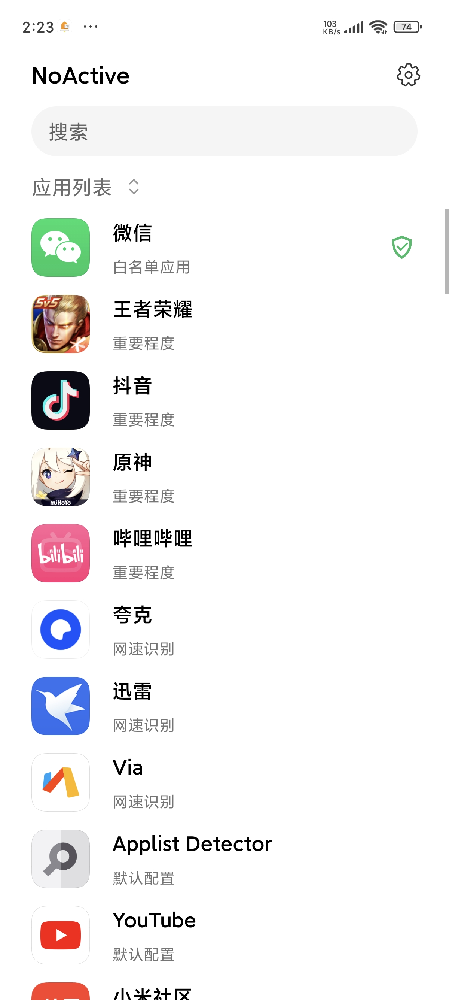
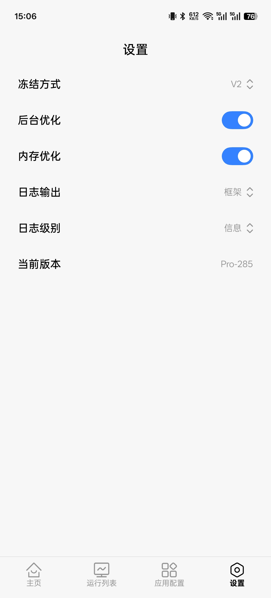

NoActive 从零到实战：Android 后台冻结保姆级教程
NoActive 是一款基于 LSPosed 的 Android 应用冻结模块，通过 Hook 系统进程调度实现后台静默冻结。本教程带你从零完成安装、激活、配置全流程，并解决常见卡屏与白名单设置。
这篇教程看完，你能独立完成 NoActive 的安装激活、冻结方式选型、白名单配置，并在遇到卡屏和 ANR 误触发时自己排查修复。
准备工作
在动手之前确认以下条件：
- 设备要求：Android 手机，已获取 Root 权限并安装 LSPosed（或同架构的模块框架）
- 内核版本：5.10 及以上内核可直接使用 V2 冻结方式，这是兼容性最好的方案
- 激活码：NoActive 采用一机一码付费模式，需要先到官网购买激活码才能解锁完整功能
关于激活码多说一句：激活码绑定设备信息，刷机后如果是官方系统包通常能直接重新激活；如果刷了非官方定制包导致设备识别变化，会自动进入人工审核流程，等开发者确认后重新输入激活码就行。忘记激活码可以通过购买时填写的邮箱在官方网站找回。
第一步：安装与激活
先把模块装上再激活，顺序不能反。
打开 LSPosed 管理器，在模块仓库里搜索 NoActive，或者从官方下载拿到最新版安装包。下载完成后在管理器里勾选启用，并在作用域里勾选系统框架和你想要冻结的应用。这一步如果漏勾，模块 Hook 不到目标应用，后面打开 NoActive 主界面也不会显示任何应用。
启用后重启手机，等系统完全起来再打开 NoActive 应用。首次进入会看到激活页面，输入你收到的激活码点击激活。激活需要联网——它要把设备信息提交到服务器绑定。激活成功后会跳转到主界面，你应该能看到手机上所有非系统应用的列表。

如果主界面一片空白，回到 LSPosed 检查作用域配置，或者打开 LSPosed 日志看模块是否报错。
第二步：冻结方式选型
激活成功先别急着乱点应用，先把全局设置调对。NoActive 的设置页在主界面右上角齿轮图标里，进去第一眼就是"冻结方式"——这是整个模块最关键的配置项，选错了后面全白搭。
四种冻结方式摆在你面前：
| 冻结方式 | 说明 |
|---|---|
| V2 | 兼容性最好、效果最统一，5.10+ 内核无脑选这个 |
| V1 | 只冻结父进程不冻结子进程，有内存泄露风险 |
| API | 暂停执行已缓存的 API，基本不用考虑 |
| Kill | 内存到达阈值会全解冻，只适合特殊场景 |
通用推荐就是 V2。如果你不确定自己的内核版本，装个 Kernel Adiutor 看一眼，或者直接选 V2 试——不行再换。
冻结方式下面还有几个开关，建议这样配——每项参数的详细含义可以查 NoActive 的文档：
- 后台优化：开启。它会给后台应用分配不同的 oom_adj 值，系统杀进程时按优先级从低到高来，真正在用的应用不容易被误杀
- 内存优化：需要先开后台优化。默认保留物理内存的 10%（最多 2GB），可用内存低于这个值时自动清理低优先级应用
- 日志级别：日常用"信息"就行，出问题要排查时切到"调试"

第三步：白名单——哪些应用不能冻
白名单是最高优先级，加进去的应用完全不受 NoActive 管控，后台该怎么跑怎么跑。所以别乱加，控制在 5~10 个，只留真正需要即时响应的。
必加的三类：
- 即时通讯：微信、QQ、Telegram、Signal。这些要实时收消息，冻一下消息就延迟甚至丢了
- 支付金融：支付宝、银行 APP。支付流程不能被打断
- 系统核心服务：系统应用默认已经在白名单里，但如果你改过配置文件记得检查一下
建议加的：云存储同步（百度网盘、OneDrive）、地图导航（导航需要持续定位）、智能家居控制（米家、Home Assistant）。
有个容易踩的坑：白名单不是万能的。如果你只是想让某个应用在特定条件下免冻结（比如音乐播放时不冻结，播完自动冻），别加白名单，应该用"后台播放"或"常驻通知"单独配置。加了白名单就等于告诉 NoActive：这个应用我完全不管了，你别动它。
第四步：日常使用与节奏
配置都调好之后，NoActive 就会开始自动工作了。它会在你离开应用后检测应用状态，进入后台的应用会被冻结。你切回来时它会自动解冻恢复——正常情况下你感觉不到这个过程。
但有几个使用习惯能让你少遇到问题：
- 不要快速连续切换应用。给冻结和解冻各留 1 秒左右的处理时间，连续快速滑任务列表容易卡屏
- 关键操作别在冻结状态下做。比如文件保存、表单提交、转账确认这些，切回来等应用完全恢复再操作
- 卡屏别强行关。真卡了按 Home 键切出去再切回来，90% 的情况会自动恢复
常见卡点与解法
解冻卡屏
现象是从最近任务或桌面切回已冻结应用时，短暂黑屏或界面渲染不出来，再切一次就好。
根因是部分内核在解冻时进程调度状态不同步——进程恢复了但界面渲染还没跟上。
解法分优先级：先试试刷 ReKernel 系列内核模块（特别是 ReKernel-X），它的解冻处理比 NkBinder 更稳；如果不想换内核，就接受 1~3 秒的等待时间，或者把卡屏特别严重的那个应用加白名单。目前这个问题没有完美方案，ReKernel 是最接近"解决"的选项。
文件操作卡住
在文件管理器或文档编辑器里打开、保存、重命名文件时操作无响应。
这是 NoActive 冻结 Binder 通知导致的。文件管理器被冻着时，其他组件发来的 Binder 通知它收不到，就卡了。
解法有三层：优先刷 ReKernel；如果用 Solid Explorer 这类支持"文件作用域"权限的文件管理器，开启它可以绕过 Binder 通知；实在不行，在 MasterConfig.json 里把 freezeBinder 设为 false 重启生效——但这会降低冻结效果，是最后的妥协。
ANR 弹框
被冻结的应用被系统判定为"应用无响应"，弹对话框问你等不等。
正常情况下 NoActive 会 Hook 系统的 ANR 检测屏蔽这类误报，但某些 ROM 上 Hook 没完全覆盖就会漏。如果频繁遇到，试试换成 Kill 冻结方式，或者把那个应用加白名单。
进阶：往下还能玩什么
走到这一步你已经能稳定用 NoActive 了。如果想更深入，可以去翻 MasterConfig.json 做高级配置——比如调整白名单 UID 批量导入、修改系统应用判定、开启命令注入让 Shell 脚本自动化控制冻结行为。不过这些属于进阶玩法，先把日常使用跑通再折腾不迟。NoActive 的资料和配置示例在 GitHub、Gitee、GitCode 都能找到，国内访问 GitHub 不方便就换 Gitee 或 GitCode。